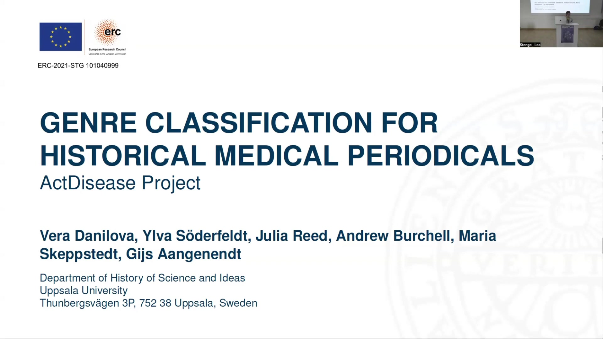
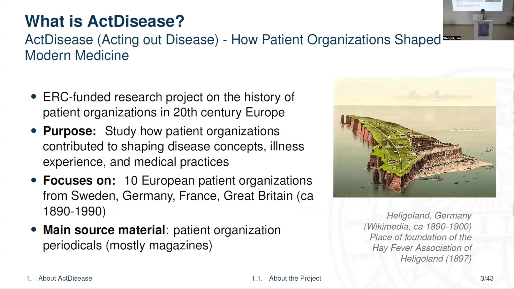
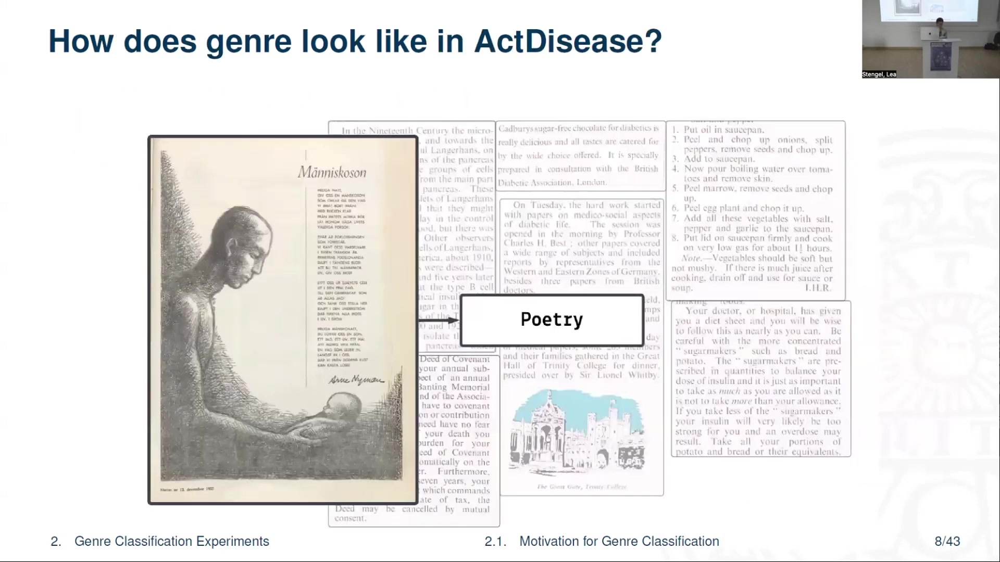
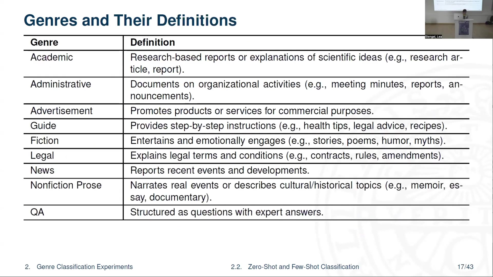
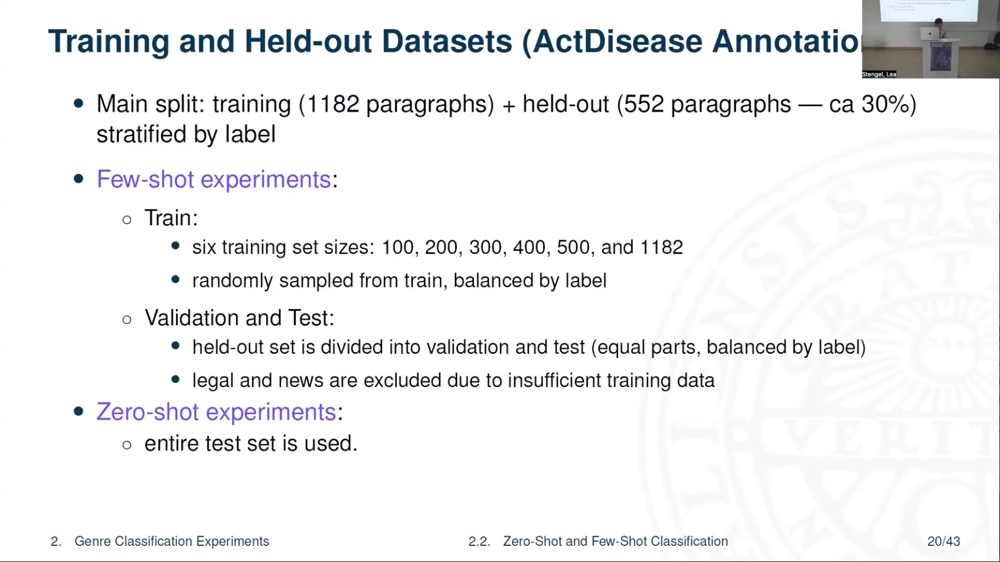
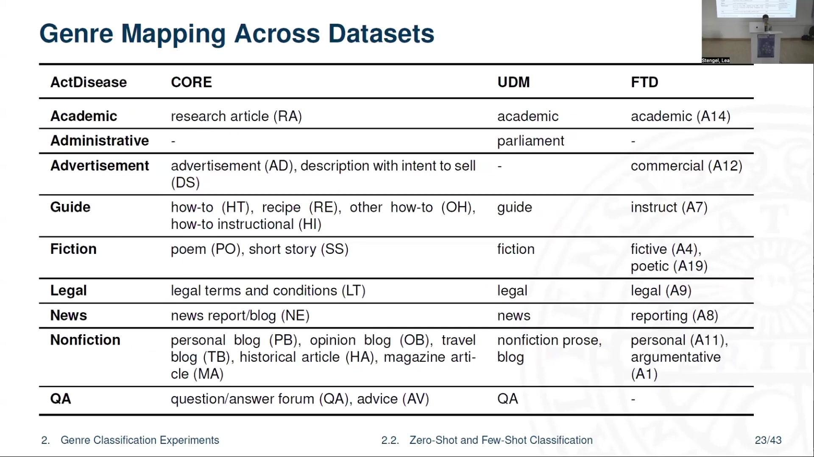

5 Genre Classification for Historical Medical Periodicals
5.1 Overview
The ActDisease project at Uppsala University focuses on the history of patient organizations in 20th century Europe, using their periodicals as primary source material. The project aims to classify textual genres within these historical medical periodicals to facilitate nuanced historical analysis, study the evolution of communicative strategies, and enhance the accuracy of text mining techniques.
The digitization of these periodicals involved Optical Character Recognition (OCR) using ABBYY FineReader Server 14. This process presented challenges with complex layouts, varied fonts, and scan quality, leading to OCR errors and disrupted reading order. Experiments were conducted for post-OCR correction of German texts using instruction-tuned generative models.
A key methodological component of the project is genre classification. Nine distinct genres were defined (Academic, Administrative, Advertisement, Guide, Fiction, Legal, News, Nonfiction Prose, QA) based on communicative purpose, under the supervision of a historian. Annotation was performed at the paragraph level on Swedish and German periodicals, achieving a Krippendorff’s alpha of 0.95.
The research explored both zero-shot and few-shot learning approaches. Zero-shot experiments involved mapping ActDisease genres to labels from publicly available datasets (CORE, FTD, UDM) and fine-tuning multilingual encoder models (XLM-Roberta, mBERT, historical mBERT - hmBERT). Results indicated that models fine-tuned on FTD with custom mapping performed well, and specific models showed aptitude for certain genres (e.g., hmBERT for ‘Administrative’).
Few-shot learning experiments assessed performance with varying training data sizes, with and without prior Masked Language Model (MLM) fine-tuning. MLM fine-tuning significantly boosted performance, with hmBERT-MLM showing the best results, particularly in distinguishing between fiction and nonfiction. Further experiments involved few-shot prompting of Llama-3.1 8b Instruct, which demonstrated decent quality but required more examples for complex genres.
The findings underscore that genre classification is vital for analyzing the diverse content of popular historical magazines. While zero-shot methods offer a viable starting point, few-shot learning with prior MLM fine-tuning of multilingual encoders, especially historical models like hmBERT, provides superior results. Future work includes refining annotation schemes, synthetic data generation, and active learning to improve classification quality. The tools and resources utilized include the ActDisease dataset, ABBYY FineReader Server 14, the CORE, FTD, and UDM datasets, and various language models (XLM-Roberta, mBERT, hmBERT, Llama-3.1 8b Instruct).
5.2 ActDisease Project and Dataset

The ActDisease project, titled “Acting out Disease - How Patient Organizations Shaped Modern Medicine,” is an ERC-funded research initiative (ERC-2021-STG 101040999). It is based at the Department of History of Science and Ideas, Uppsala University, Sweden. Its primary purpose is to investigate the historical role of patient organizations in shaping disease concepts, illness experiences, and medical practices throughout 20th century Europe.
The project focuses on approximately 10 European patient organizations located in Sweden, Germany, France, and Great Britain, covering a period from around 1890 to 1990. The main source material for this research comprises periodicals, predominantly magazines, published by these patient organizations. This collection forms the ActDisease dataset, a private and recently digitized compilation totaling 96,186 pages.
The dataset includes materials related to various diseases and countries:
Germany: Allergy/Asthma, Diabetes, Multiple Sclerosis.
Sweden: Allergy/Asthma, Diabetes, Lung Diseases.
France: Diabetes, Rheumatism/Paralysis.
UK: Diabetes, Rheumatism.
Illustrative examples of these periodicals include “BRA Review” and “Allergia.” An example of the historical context is Heligoland, Germany, which was the founding place of the Hay Fever Association of Heligoland in 1897.
5.3 Digitization and OCR Challenges
The digitization of the ActDisease dataset was performed using Optical Character Recognition (OCR). The software employed for this task was ABBYY FineReader Server 14. While this OCR model performed well in recognizing most common layouts and fonts, several challenges persisted. These included difficulties with complex page layouts, slanted text, rare or unusual fonts, and inconsistencies in scan or photograph quality.
Consequently, some issues remain in the digitized collection. These include OCR errors, which are especially prevalent in German and French texts, and instances of disrupted reading order. To address some of these problems, experiments were conducted on post-OCR correction, specifically for German texts, utilizing instruction-tuned generative models.
The findings of these experiments are detailed in a publication by Danilova and Aangenendt (RESOURCEFUL-2025, ACL). It was also observed that OCR errors occur frequently in texts with creative formatting, such as advertisements, humor pages, and poems.
5.4 Motivation for Genre Classification
Exploration of the ActDisease materials revealed a high diversity of text types, which, however, exhibited similarities across the different magazines. A significant challenge identified is that various text types often appear concurrently on a single page—for instance, an administrative report might be placed next to an an advertisement and a humor section. This heterogeneity poses a problem for standard text mining approaches, as yearly and decade-based topic models and term counts typically do not differentiate between these text types, leading to a likely bias towards the most frequent genres.
To address these challenges, genre emerged as a useful concept. In language technology, genre is often defined as a class of documents that share a common communicative purpose, as described by Petrenz (2004) and Kessler (1997). The primary objective of implementing genre classification is to enable the exploration of the source material from multiple perspectives, thereby facilitating the formulation of historical arguments.
Specifically, genre classification allows for the study of how communicative strategies evolved over time, comparing these strategies across different countries, diseases, and publications. Furthermore, it permits a more fine-grained analysis of term distributions and topic models by examining them within distinct genre categories.
5.5 Genre Definitions and Examples

The ActDisease periodicals contain a variety of textual genres. Examples identified include poetry, academic reports (such as studies on the pancreas), legal documents (like deeds of covenant), advertisements (for instance, for diabetic chocolate), instructive or guidance texts (including recipes or dietary advice), patient organization reports detailing meetings and activities, and narratives about patient experiences and lives.
The genre labels used for classification were defined under the supervision of the project’s main historian, who specializes in patient organizations. The labels were designed to be useful for segregating content within the materials to support further historical analysis, while also being as general-purpose as possible to allow for potential application to similar datasets.
The following genres, along with their definitions and communicative purposes, were established:
Academic: Consists of research-based reports or explanations of scientific ideas, such as research articles or reports. Its purpose is to convey information from the scientific and medical communities to the magazine’s audience.
Administrative: Includes documents pertaining to organizational activities, like meeting minutes, reports, and announcements. It aims to report on and inform about the events and activities of patient organizations.
Advertisement: Features content that promotes products or services for commercial purposes.
Guide: Provides step-by-step instructions, such as health tips, legal advice, or recipes.
Fiction: Encompasses texts designed to entertain and emotionally engage readers, including stories, poems, humor, and myths.
Legal: Contains texts that explain legal terms and conditions, such as contracts, rules, or amendments.
News: Comprises reports on recent events and developments.
Nonfiction Prose: Includes narratives of real events or descriptions of cultural or historical topics, such as memoirs, essays, or documentaries.
QA: Refers to sections structured as questions paired with expert answers, commonly found in the periodicals.
5.6 Annotation Process and Dataset Preparation

The annotation unit for genre classification was defined as paragraphs. These paragraphs were derived from the ABBYY OCR output and subsequently merged based on font patterns (type, size, bold, italic attributes) at the page level. For the annotation task, samples were drawn from two specific periodicals: the Swedish magazine “Diabetes” and the German magazine “Diabetiker Journal.” The selection comprised the first and mid-year issues from each year of these publications.
A team of six project members, consisting of four historians and two computational linguists, all either native speakers or proficient in Swedish and German, performed the annotations. Two independent annotations were collected for each paragraph. The inter-annotator agreement achieved was 0.95, measured by Krippendorff’s alpha, indicating a high level of consistency. An example of the annotation file shows a tabular structure with metadata (Year, Volume, Issue, etc.), the paragraph text, and columns for each genre where annotators made hard assignments.
The annotated dataset was split into a training set of 1182 paragraphs and a held-out set of 552 paragraphs (approximately 30% of the data), with stratification by label. For few-shot learning experiments, six different training set sizes were created (100, 200, 300, 400, 500, and 1182 paragraphs), randomly sampled from the main training set and balanced by label. The held-out set was further divided equally into validation and test sets, also balanced by label. The ‘legal’ and ‘news’ genres were excluded from these few-shot experiments due to insufficient training instances. For zero-shot experiments, the entire test portion of the held-out set was utilized. Analysis of genre distribution in the training and held-out samples revealed a strong imbalance for the ‘advertisement’ and ‘nonfictional prose’ genres across the German and Swedish languages.
5.7 Zero-Shot Genre Classification

For zero-shot genre classification, the research addressed two main questions: whether genre labels from publicly available datasets could be efficiently mapped to the custom ActDisease labels, and how classification performance would vary across different datasets and models. Three publicly available datasets were utilized: the Corpus of Online Registers of English (CORE) by Egbert et al. (2015), annotated at the document level primarily in English; the Functional Text Dimensions (FTD) dataset of web genres by Sharoff (2018), also document-level, covering English and Russian; and UD-MULTIGENRE (UDM), a subset of Universal Dependencies with recovered sentence-level genre annotations in 38 languages (de Marneffe et al., 2021; Danilova and Stymne, 2023).
Genre mapping between ActDisease labels and those in CORE, UDM, and FTD was performed independently by two annotators, with final mappings chosen based on full agreement. For example, the ActDisease ‘Academic’ genre was mapped to ‘research article’ (RA) in CORE, ‘academic’ in UDM, and ‘academic’ (A14) in FTD. Some ActDisease genres, like ‘Administrative’ in CORE and FTD, lacked direct suitable mappings.
The training data creation pipeline involved this mapping, followed by preprocessing (removing web addresses, emails, XML tags, and emojis), chunking, and sampling. Four sampling configurations were applied: using only Germanic languages [G+], using all language families [G-], balancing by ActDisease labels [B1], and balancing by both ActDisease and original dataset labels [B2]. This process generated four distinct training samples for each of the FTD, CORE, and UDM datasets.
Three multilingual encoder models were employed: XLM-Roberta (Conneau et al., 2020), mBERT (Devlin et al., 2019), and historical mBERT (hmBERT) (Schweter et al., 2022). hmBERT was of particular interest due to its pretraining on multilingual historical newspapers, including German and Swedish. Each model was fine-tuned on all dataset samples and configurations, resulting in 48 fine-tuned models. Reported metrics are averages across these configurations.
Evaluation of zero-shot predictions was challenging due to imperfect label set overlaps. Therefore, performance was analyzed for each genre separately, supplemented by confusion matrix analysis. The X-GENRE web genre classifier (Kuzman et al., 2023) served as a baseline. The evaluation scenario was cross-lingual for FTD and X-GENRE (which lacked German or Swedish training data for the mapped labels) and partially cross-lingual for UDM and CORE.
Overall results for zero-shot learning indicated that models fine-tuned on the FTD dataset with the custom ActDisease mapping performed better. Models trained on UDM and CORE exhibited some class-specific biases; for instance, UDM-trained models showed a bias towards ‘news,’ while CORE-trained models leaned towards ‘guide.’ Certain models demonstrated strengths for specific genres: XLM-Roberta fine-tuned on UDM achieved, on average, 32% more correct predictions for ‘QA’ compared to mBERT and hmBERT. Conversely, hmBERT fine-tuned on UDM yielded 16% more correct predictions for ‘Administrative’ than XLM-Roberta and mBERT. CORE-based models were effective at predicting the ‘legal’ genre. Confusion matrices for configurations like hmBERT_UDM_True_True illustrated these behaviors. Detailed per-category F1 scores, averaged across data configurations, were presented, with highlighted values indicating robust performance not attributable to systematic biases. For instance, hmBERT (in its non-MLM version for zero-shot context) showed strong F1 scores for ‘administrative’ and ‘advertisement’. The different data sampling configurations (B1, B2, G+, G-) had varied impacts: for FTD, B2 and G+ decreased performance, while for UDM, including other language families and applying balancing generally improved macro F1 scores.
5.8 Few-Shot Classification with Encoder Models

Few-shot learning experiments aimed to understand how classification performance changes with varying training set sizes across different models, and whether prior fine-tuning on the full dataset (referred to as MLM, in the context of Masked Language Model pre-training benefits) significantly enhances performance. The models tested included hmbert, mbert, and xlmr, each with a version that had undergone prior MLM fine-tuning on the ActDisease dataset (hmbert-mlm, mbert-mlm, xlmr-mlm). Training dataset sizes ranged from 100 to 1182 instances.
The results demonstrated that prior MLM fine-tuning provided a clear advantage. F1 scores consistently increased with larger training set sizes for all models. However, even with the maximum training size of 1182 instances, F1 scores generally remained below 0.8. The hmBERT-MLM model slightly outperformed other models. For example, with 1182 training instances, hmBERT-MLM achieved a macro F1 of 0.77 and an accuracy of 0.82, showing strong performance in categories like ‘administrative’ (0.86 F1), ‘advertisement’ (0.93 F1), and ‘nonfiction prose’ (0.82 F1). In comparison, XLMR-MLM achieved a macro F1 of 0.76 and accuracy of 0.84, with high scores in ‘QA’ (0.84 F1) and ‘legal’ (0.89 F1), but lower for ‘nonfiction prose’ (0.56 F1).
The superior performance of hmBERT-MLM was partly attributed to its sustained ability to differentiate between ‘fiction’ and ‘nonfiction prose’ even with the full dataset, a task where other models, particularly XLM-Roberta, experienced a significant performance decline. An analysis of the XLM-Roberta-MLM confusion matrix using the full-sized training dataset revealed that ‘nonfictional prose’ was frequently misclassified as ‘fiction.’ This suggests that within the specific domain of diabetes-focused patient organization magazines, ‘fiction’ and ‘nonfictional prose’ might share many thematic and narrative elements, especially since both often revolve around patient experiences. This similarity could become more pronounced with larger datasets, indicating that further data or alternative methods might be necessary to better distinguish these genres.
5.9 Few-Shot Prompting with Llama-3.1 8b Instruct

Due to the limited availability of annotated data for comprehensive instruction tuning, few-shot prompting experiments were conducted using Llama-3.1 8b Instruct. This model is a popular, multilingual, generative language model with open weights. The method involved constructing a prompt that included an instruction section with definitions for each genre, followed by an examples section containing two to three carefully selected examples per genre. The input text from the test set was then provided, and the model was prompted to output the predicted genre.
The evaluation was performed on the zero-shot test set, which is the entire held-out portion of the annotated data. The results indicated that Llama-3.1 8b Instruct could handle certain genre labels reasonably well; for instance, it achieved an F1-score of 0.84 for the ‘legal’ genre. However, the small number of examples (two or three per genre) proved insufficient for the model to adequately learn and represent more complex or internally diverse genres, such as ‘nonfictional prose,’ ‘advertisement,’ and ‘administrative.’ The confusion matrix of its predictions showed correct classifications along the diagonal for several genres but also highlighted areas of confusion.
5.10 Conclusions and Future Work

The research concludes that popular magazines, rich in varied content, present significant text mining challenges due to their multitude of genres, unlike more homogenous sources like scientific journals and books. These genres are indicative of chosen communicative strategies, and their consideration is vital for an accurate and detailed interpretation of text mining outputs. Genre classification serves as a key method to make these complex historical sources more accessible for computational analysis.
For scenarios with no training data, two potential approaches are suggested: leveraging existing modern datasets if their genre categories are sufficiently general-purpose and align with the target material, or employing few-shot prompting with a capable generative model. However, if some annotated data is available, few-shot learning using multilingual encoders such as XLM-Roberta or, particularly, historical multilingual BERT (hmBERT), especially when combined with prior MLM fine-tuning, proves to be a more effective strategy. The most significant performance improvements from MLM fine-tuning were observed for hmBERT, which showed a 24% gain, compared to 14.5% for mBERT-MLM and 16.9% for XLM-RoBERTa-MLM.
Ongoing and future work aims to further enhance the quality of this research. This includes applying the classification to investigate specific historical hypotheses, developing and implementing a new annotation scheme with more fine-grained genre distinctions, undertaking a new annotation project funded by Swe-CLARIN, exploring synthetic data generation techniques to augment training sets, and employing active learning strategies to optimize the annotation process. These efforts are directed at improving genre classification quality for both the ActDisease project’s internal research needs and for the benefit of the wider research community.
5.11 Acknowledgements

Acknowledgements are extended to the annotation team, composed of project members Ylva Söderfeldt, Julia Reed, Andrew Burchell, Maria Skeppstedt, and Gijs Aangenendt. The project received funding from the European Research Council (ERC) under grant ERC-2021-STG 101040999. Support in the form of GPU resources and data storage was provided by the Centre for Digital Humanities and Social Sciences. The contributions of reviewers, including Dr Maria Skeppstedt and anonymous reviewers, are also acknowledged. The project website can be accessed via a QR code presented on the final slide.